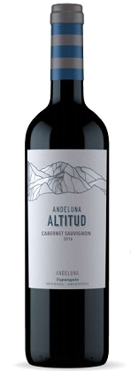

On the other hand, we denounce with righteous indignation and dislike men who are so
beguiled and demoralized by the charms of pleasure of the moment, so blinded by desire,
that they cannot foresee the pain and trouble that are bound to ensue; and equal blame
belongs to those who fail in their duty through weakness of will, which is the same as
saying through shrinking from toil and pain. These cases are perfectly simple and easy
to distinguish. In a free hour, when our power of choice is untrammelled and when nothing
prevents our being able to do what we like best, every pleasure is to be welcomed and every
pain avoided. But in certain circumstances and owing to the claims of duty or the obligations
of business it will frequently occur that pleasures have to be repudiated and annoyances
accepted. The wise man therefore always holds in these matters to this principle of selection:
he rejects pleasures to secure other greater pleasures, or else he endures pains to avoid worse pains.